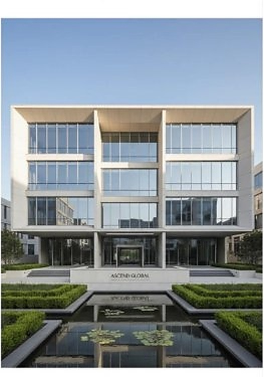

Clínica Óptica.
Servicios de optometría avanzada y diseño de monturas a medida. Aplicamos precisión arquitectónica al cuidado integral de la visión.

Nuestros Servicios.
Atención personalizada con tecnología óptica de alta precisión. Desde la graduación clínica hasta el diseño, montaje y ajuste de tus monturas.
Revisar la Vista
Examen visual exhaustivo: graduación digital de la agudeza visual, medición de la tensión ocular y evaluación binocular para evitar fatiga ante pantallas.
Comprar Gafas
Catálogo selecto de monturas graduadas y de sol. Te asesoramos según tu fisonomía facial y el grosor de tus cristales para un resultado estético perfecto.
Comprar Lentillas
Adaptación personalizada de lentes de contacto diarias, mensuales, tóricas (astigmatismo) y progresivas. Prueba de adaptación y pack de inicio.
Cambiar Cristales
Actualiza tu graduación conservando tu montura actual. Montamos lentes antirreflejantes, reducidas, fotocromáticas o con filtro de luz azul.
Salud Ocular & Fondo de Ojo
Retinografía digital de alta definición sin necesidad de gotas dilatadoras. Detección precoz de alteraciones maculares y control del nervio óptico.
Ajuste & Taller Propio
Calibrado y enderezado anatómico de patillas, cambio de plaquetas nasales, tornillos de seguridad y limpieza profunda por ultrasonidos.
Visualizador 3D.
Explora en tiempo real la geometría de nuestra montura insigne. Rota libremente 360°, haz zoom y personaliza los acabados de titanio y cristales.